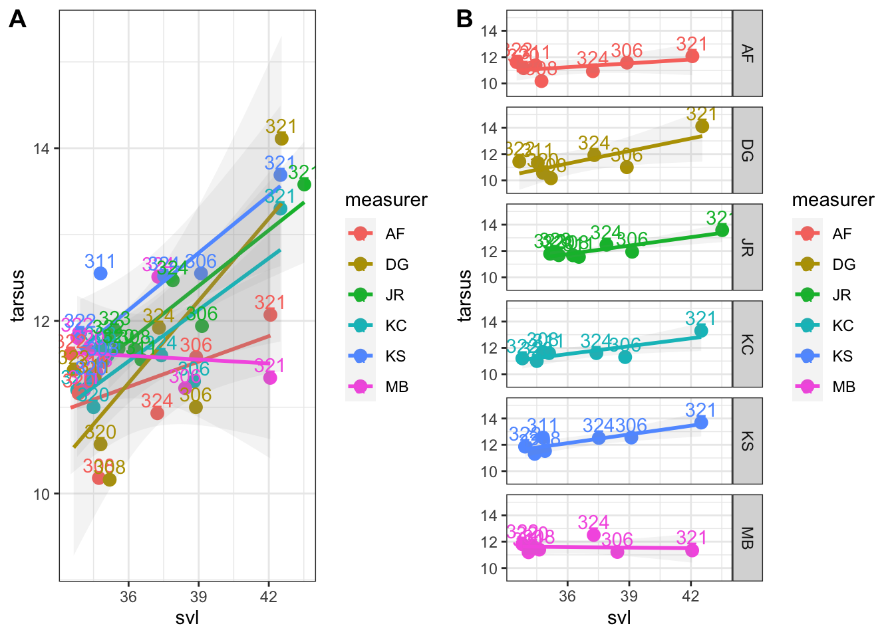
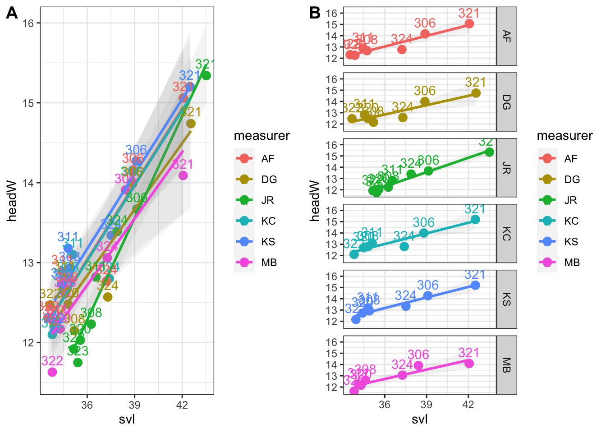
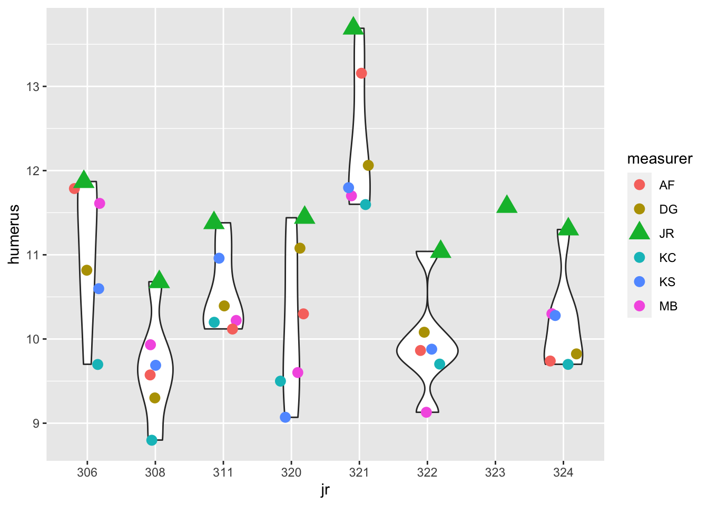

require( googlesheets4 )
require(dplyr)
require(magrittr)
require(ggplot2)
require(cowplot)
if(dir.exists("output")!=TRUE) dir.create("output") # check if output directory out exists, if false createRepeability of Frog Morphometric Measurements
Within and between measurer repeatability for the ecomorph analysis
Assessing Repeatability of Morphometric Measurements
We want to measure repeatability of our morphometric measurements, both within individual measurers and between measurers. We plan to combine data with that measured by Julio Rivera in 2015, so we want to know that the data are compatible.
The accuracy we are aiming for is 95%, or 5% measurement error (both within and between individual measurers).
Each measurer measured the same 7 frogs (Hylophorbus sp. from Buyetai: JR306,308,311,320,321,324), which was repeated (2 sets of measurements per measurer).
Setup
Read in our data from a Google Spreadsheet, and convert measurer, session and jr number to factors.
file <- "https://docs.google.com/spreadsheets/d/1-w62GXvKwQ868dwiMVzgPdLYbgSkXxSqasE-YoaGOUc/edit#gid=0"
gs4_deauth() # not a private sheet, so no need for authentication
dat <- as.data.frame(read_sheet(file)) %>% ### INPUT DATA from googlesheet
filter(!is.na(measurer)) # remove spacer rows✔ Reading from "Frog Repeatability Measurements".✔ Range 'Sheet1'.dat %<>% mutate_at(c("measurer", "session", "jr"), as.factor) %>%
mutate( shape = case_when( measurer=="JR" ~ 25, measurer!="JR" ~ 19 )) %>%
mutate( shape = as.factor(shape))Repeatability
This requires two full sets of measurements, so this is still in progress.
mod <- with(dat, summary(aov(lm( svl ~ jr ))))
s2_within <- ms_within <- mod[[1]][2,3]
s2_within[1] 0.2805617ms_among <- mod[[1]][1,3]
s2_among <- (ms_among-ms_within)/2
ME <- s2_within/(s2_within+s2_among) * 100
ME[1] 0.6419338Plots of measurements from the first session
Plot all of our data against the original dataset (JR in green), as well as faceted by individual.
This function creates the plots that are repeated for each morphometric variable.
p <- dat %>% ggplot(aes(svl, femur, color=measurer, label=jr))
v <- dat %>% ggplot(aes(jr, svl, group=jr, color=measurer, shape=measurer))
make_violins <- function(v) {
v + geom_violin() +
geom_jitter(aes(x=jr, color=measurer, shape=measurer, size=measurer), width=.2) +
scale_shape_manual(values=c(19,19,17,19,19,19)) +
scale_size_manual(values=c(3,3,5,3,3,3))
}
make_plots <- function(p, v) {
q1 <- p + geom_point(size = 3) +
geom_smooth( aes(group=measurer), method="lm", alpha=.1) +
geom_text(nudge_y = .15) +
theme_bw()
q2 <- p + geom_point(size = 3) +
geom_smooth( method="lm", alpha=.1) +
geom_text(nudge_y = 1) +
facet_grid( measurer ~ . ) +
theme_bw()
plot_grid(q1, q2, labels="AUTO")
}
# q3 <- v + geom_violin() +
# geom_jitter(aes(x=jr, color=measurer, shape=measurer), size=3, width=.2) +
# scale_shape_manual(values=c(19,19,17,19,19,19))
# q3Set up the ggplots:
femp <- dat %>% ggplot(aes(svl, femur, color=measurer, label=jr))
tibp <- dat %>% ggplot(aes(svl, tibiofibula, color=measurer, label=jr))
tarp <- dat %>% ggplot(aes(svl, tarsus, color=measurer, label=jr))
footp <- dat %>% ggplot(aes(svl, foot, color=measurer, label=jr))
hwp <- dat %>% ggplot(aes(svl, headW, color=measurer, label=jr))
hlp <- dat %>% ggplot(aes(svl, headL, color=measurer, label=jr))
hump <- dat %>% ggplot(aes(svl, humerus, color=measurer, label=jr))
radp <- dat %>% ggplot(aes(svl, radioulna, color=measurer, label=jr))
handp <- dat %>% ggplot(aes(svl, hand, color=measurer, label=jr))
sv <- dat %>% ggplot(aes(jr, svl, group=jr, color=measurer, shape=measurer))
femv <- dat %>% ggplot(aes(jr, femur, group=jr, color=measurer, shape=measurer))
tibv <- dat %>% ggplot(aes(jr, tibiofibula, group=jr, color=measurer, shape=measurer))
tarv <- dat %>% ggplot(aes(jr, tarsus, group=jr, color=measurer, shape=measurer))
footv <- dat %>% ggplot(aes(jr, foot, group=jr, color=measurer, shape=measurer))
hwv <- dat %>% ggplot(aes(jr, headW, group=jr, color=measurer, shape=measurer))
hlv <- dat %>% ggplot(aes(jr, headL, group=jr, color=measurer, shape=measurer))
humv <- dat %>% ggplot(aes(jr, humerus, group=jr, color=measurer, shape=measurer))
radv <- dat %>% ggplot(aes(jr, radioulna, group=jr, color=measurer, shape=measurer))
handv <- dat %>% ggplot(aes(jr, hand, group=jr, color=measurer, shape=measurer))Make plots:
SVL
make_violins(sv)
Looks like everyoneʻs SVL are a little short. Basically JR304 and JR306 match well, but the others, JR308, JR311, JR320, JR321, JR322, JR324 are a little short. Did he press them down? Or use a ruler?
Femur
make_violins(femv)
make_plots( femp )
Looks like my femur measurements (MB) are a little short - JR must have measured from the vent rather than from the midline perpendicular to the femur.
Tibiofibula
make_violins(tibv)
make_plots( tibp )
Tibiofibula looks good, except for what looks like a typo in DGʻs data?
Tarsus
make_violins(tarv)
make_plots( tarp )
Not sure what I did! Lol. Good example of the unfortunate outlier being the largest throwing the whole trend off.
Foot
make_violins(footv)
make_plots( footp )
Looks good!
Head Width
make_violins(hwv)
make_plots( hwp )
Looks good!
Head Length
make_violins(hlv)
make_plots( hlp )
Oh oh. We are not using the right Head Length landmark.
Humerus
make_violins(humv)
make_plots( hump )
Hmm. We are all a little consistently lower than JR, some more so.
Radioulna
make_violins(radv)
make_plots( radp)
Need to work on this one too.
Hand
make_violins(handv)
make_plots( handp )
Looks good!
Conclusions
We need to confirm the landmarks JR used for the limb segment and head length measurements (foot and hand are OK). It looks promising for repeatability but we need to confirm after we get two full sets of measurements.